Главная · Блог
Двадцать статей о технике и тактике падела. Курс — это то же самое, только по порядку и на видео.
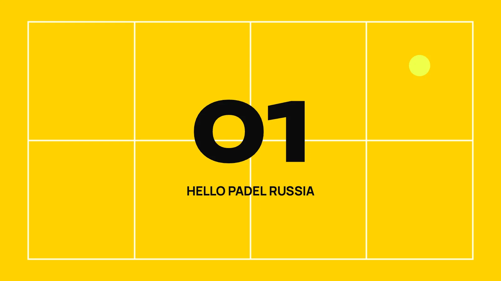
Главное отличие падела от тенниса — задняя стена. В теннисе мяч, ушедший за тебя, мёртв. В паделе он только…
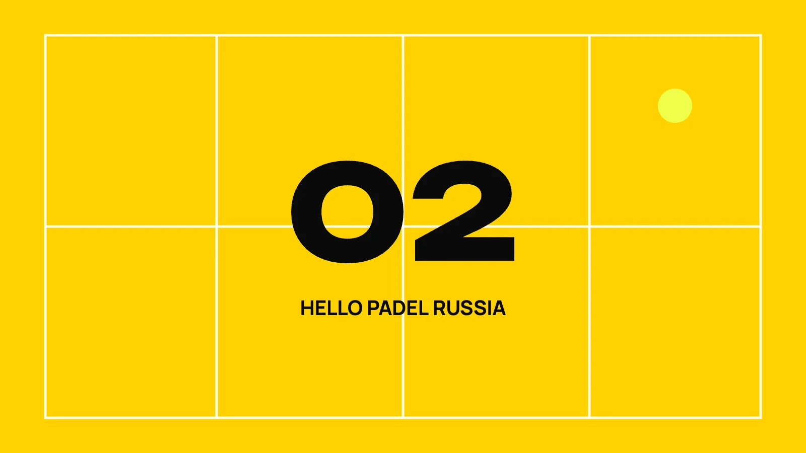
Соперники подняли свечу. Ты отходишь назад и хочешь вбить мяч в пол со всей силы. Так теряют сетку, а вместе…
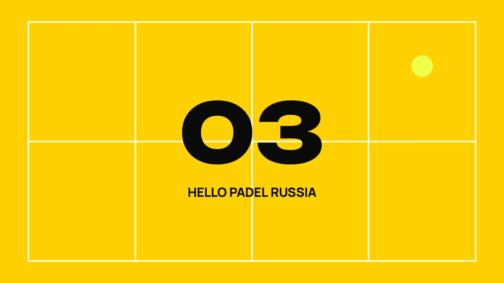
Мяч пошёл вверх. У тебя примерно полсекунды на решение, и обычно ты его не принимаешь — просто бьёшь то, что…
В теннисе свеча — жест отчаяния, её играют редко и от безысходности. В паделе всё ровно наоборот. Чем выше…
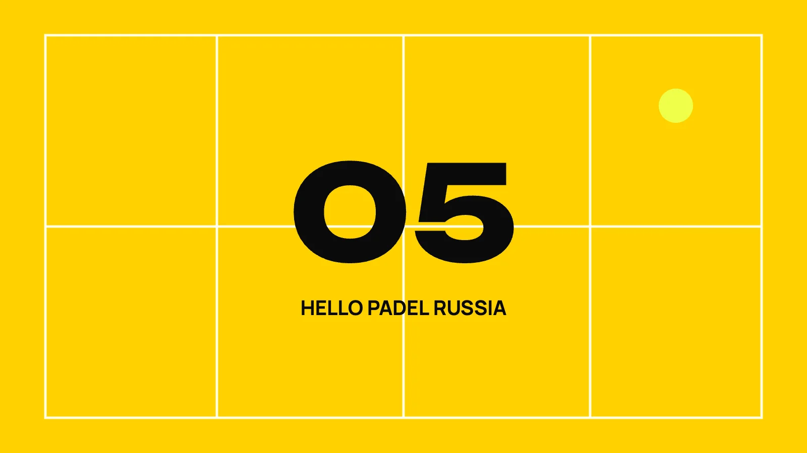
Ты можешь сколько угодно работать над форхендом, волеем и бандехой. Если хватка неправильная, всё это встанет…
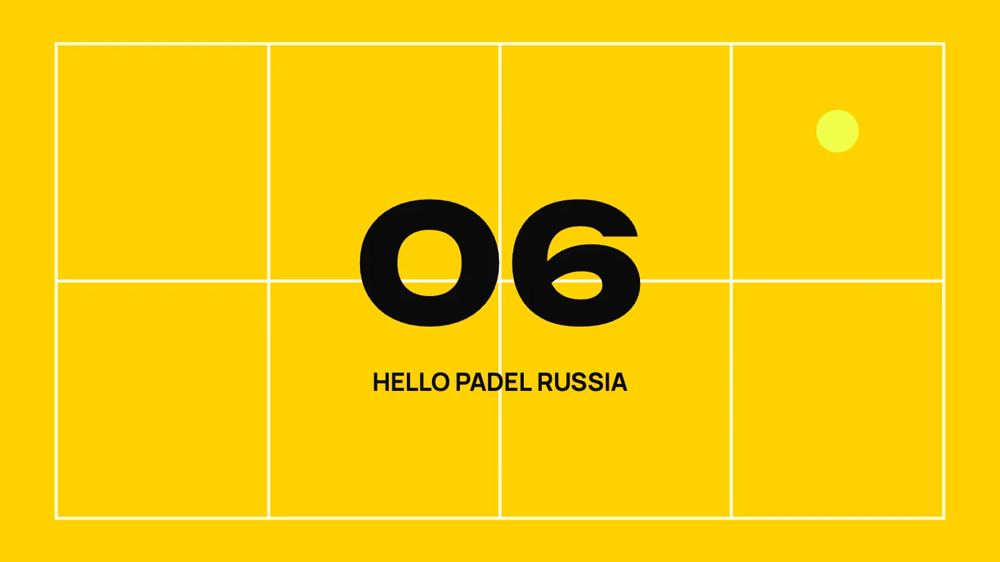
Мяч висит высоко над тобой, и рука сама тянется врезать со всей силы. Иногда получается эффектно. Гораздо…
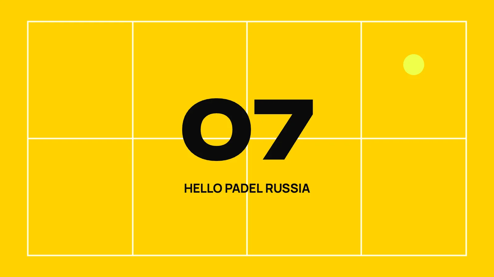
Подача в паделе выглядит проще некуда: снизу, от уровня пояса, по диагонали в квадрат. Именно поэтому новички…
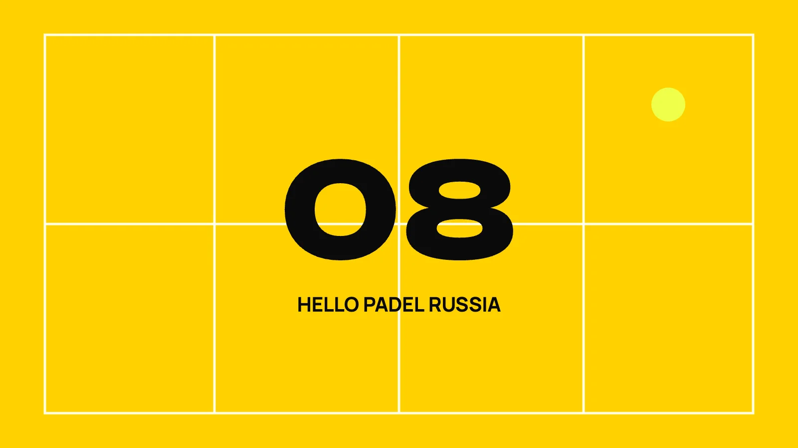
Ты сидишь у задней стенки, соперники на сетке, и кажется, что вариантов два: свеча или терпеть. Есть третий…
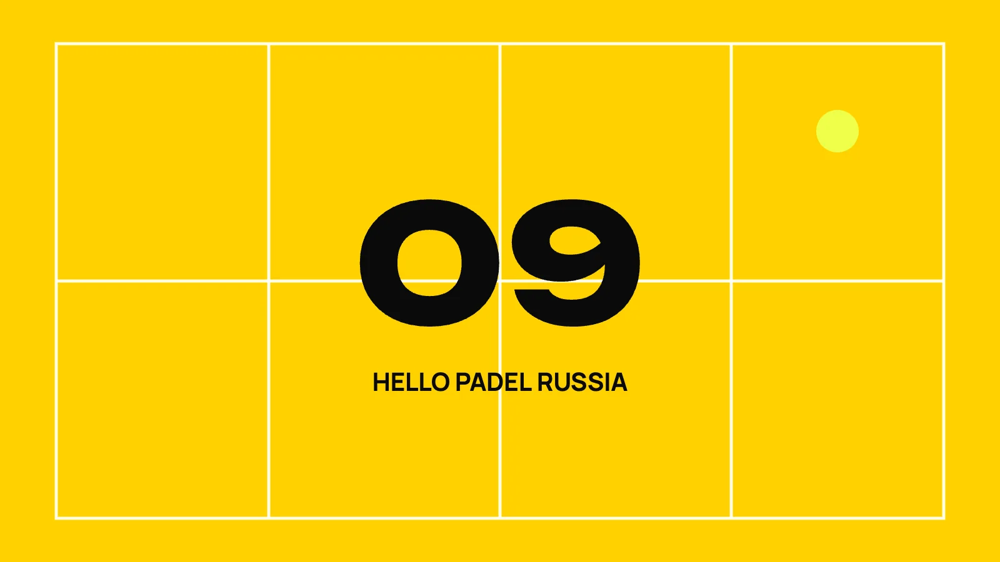
Угол — место, где розыгрыши заканчиваются чаще всего. Двойное стекло сбивает с толку даже сильных игроков…
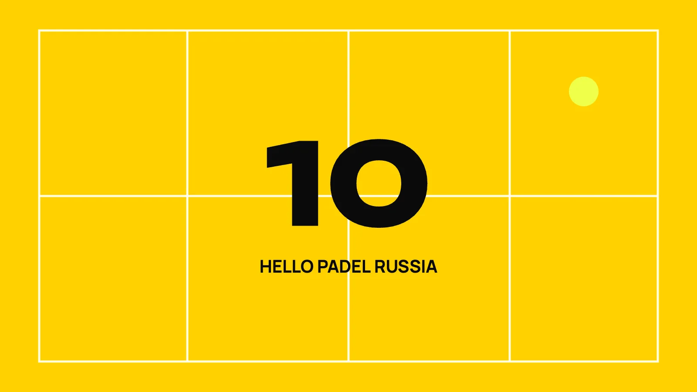
Хороший волей решает, закончится розыгрыш очком или превратится в бесконечный обмен. И чаще всего разница не…
Посмотри на любую пару новичков со стороны — и ты увидишь двух игроков, которые живут в разных матчах. Один…
Мяч летит ровно между вами. Вы оба тянетесь. Ракетки почти сталкиваются, мяч падает на пол, и вы…
Большинство очков в паделе выигрывается у сетки. Поэтому дошёл до неё — уже полдела. Но дальше начинается…
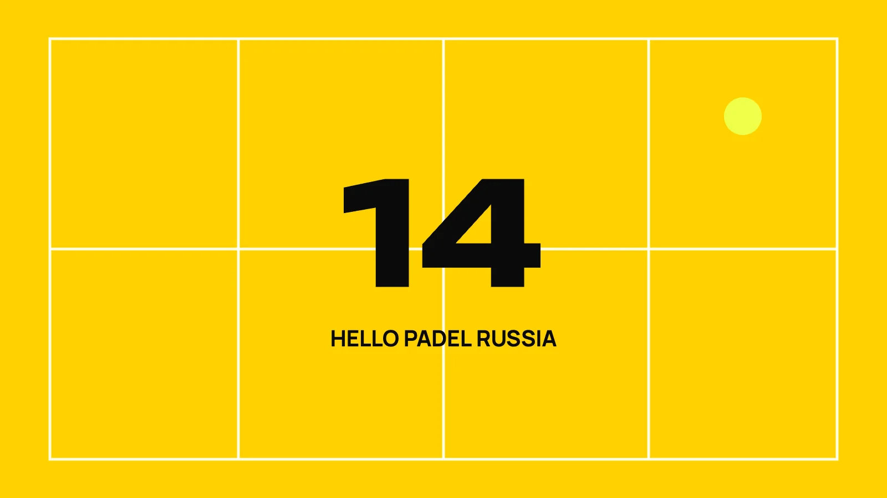
Ты у сетки, всё под контролем — и тут над тобой уходит свеча. Ты бежишь назад, играешь как получится, и вот…
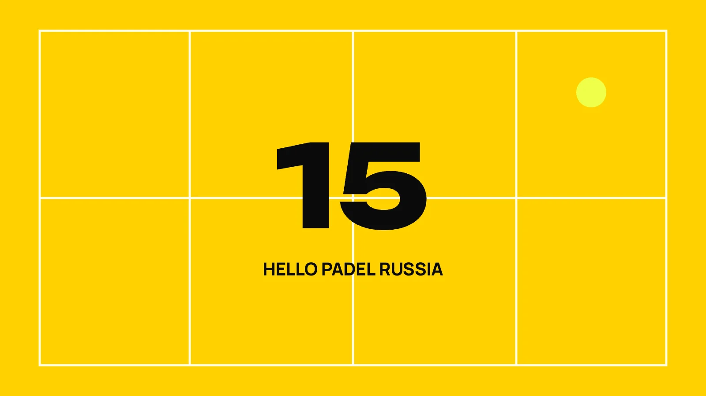
«Ты на какой стороне играешь?» — вопрос, который в паделе задают раньше, чем «как тебя зовут». И почти всегда…
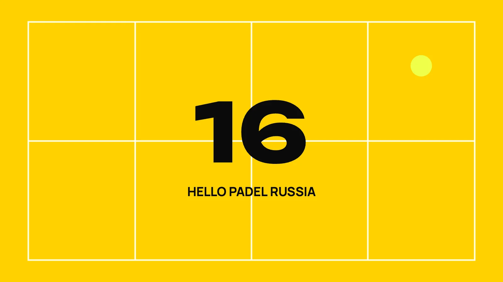
Ты ловишь первый более-менее удобный мяч и лупишь. Мяч летит в сетку или отскакивает от стекла прямо…
Сядь у любого корта на пять минут и посмотри на игру со стороны. Уровень новичка выдаёт не техника удара — её…
Теннисист выходит на падел-корт уверенным. Он хорошо играет с лёта, естественно бьёт над головой, у него…
Полгода назад ты рос каждую неделю. Сейчас ты выигрываешь клубные турниры, но против игроков на голову выше…
Ты играешь регулярно уже который месяц. Матчи, сеты, соперники разные. А уровень стоит на месте. Проблема не…